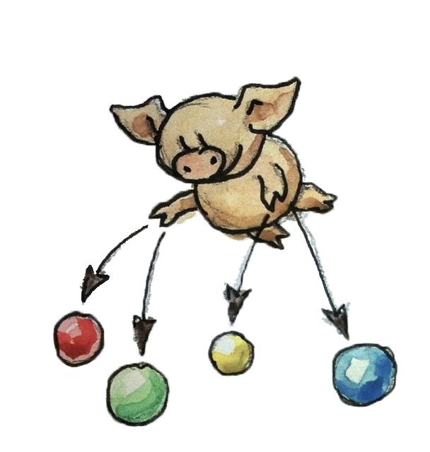
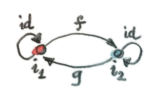
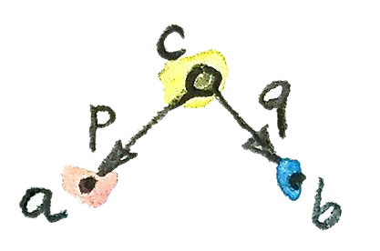
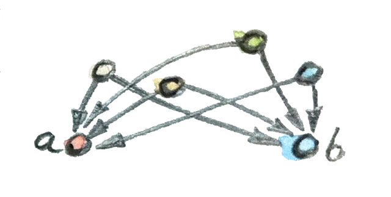
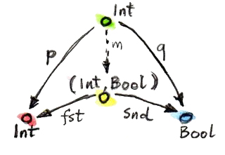
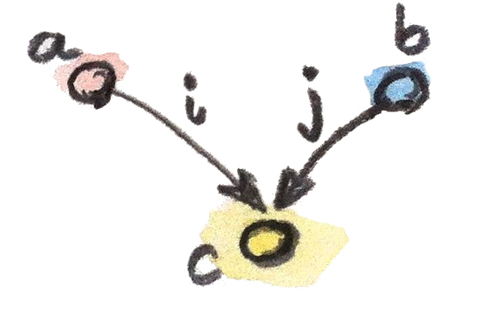

古希腊剧作家欧里庇得斯曾说：“一个人就像他惯于结交的伙伴。”关系定义了我们。在范畴论中，这一点体现得再明显不过。若想从一个范畴里挑出某个特定对象，我们只能描述它同其他对象（以及它自己）的关系模式。这些关系由态射定义。
范畴论中有一种常见做法，叫作泛构造（universal construction）：用对象之间的关系来定义对象。方法之一是先选定一种模式——由对象和态射构成的特定形状——再寻找它在范畴中的所有实例。若模式足够常见而范畴又很大，匹配结果很可能非常多。诀窍是为这些匹配建立某种排名，并挑出可视为最佳匹配的那一个。
这个过程很像网络搜索。查询就是一种模式。过于宽泛的查询会带来很高的召回率：结果很多，其中有些相关，有些无关。为了排除无关结果，你会细化查询，从而提高准确率。最后，搜索引擎为结果排序，而你感兴趣的那项最好位于榜首。
始对象
最简单的形状只有一个对象。显然，一个范畴有多少对象，这个形状就有多少实例；候选实在太多。我们需要建立某种排名，尝试找到层级顶端的对象。手头唯一的手段是态射。若把态射看成箭头，整个范畴中的箭头可能总体上从一端流向另一端。在有序范畴中便是如此，例如偏序。我们可以推广对象先后关系的概念：若有一支箭头（一个态射）从对象 a 指向对象 b，便称 a 比 b“更靠前”。于是可以把始对象定义为向所有其他对象都发出箭头的对象。当然，这种对象不一定存在，这没有问题。更大的问题在于，这样的对象也许太多：召回率不错，准确率却不够。解决办法是借鉴有序范畴——任意两对象间最多只有一支箭头，也就是一个对象“小于等于”另一个对象的方式只有一种。于是得到始对象的定义：
始对象（initial object）是这样一个对象：从它到范畴中任意对象都恰好存在一个态射。

即便如此，也不能保证始对象（若存在）本身唯一。不过，它保证了退而求其次的最好结果：始对象在同构意义下唯一。同构在范畴论中极其重要，稍后就会讲。现在只需接受：同构意义下的唯一性，足以证明定义中使用“这个”始对象是合理的。
来看一些例子。偏序集（常简称 poset）中的始对象是它的最小元素。有些偏序集没有始对象，例如以小于等于关系作为态射、同时包含正数和负数的全体整数集合。
在集合与函数的范畴中，始对象是空集。还记得，空集对应 Haskell 类型 Void（C++ 中没有相应类型），从 Void 到任意其他类型的唯一多态函数称为 absurd：
absurd :: Void -> a正是这一族态射使 Void 成为类型范畴中的始对象。
终对象
我们继续使用单对象模式，但改变对象的排名方式。若存在从 b 指向 a 的态射，就说对象 a 比对象 b“更靠近终点”（注意方向反转了）。我们寻找一个比范畴中所有其他对象都更靠近终点的对象，并再次要求唯一性：
终对象（terminal object）是这样一个对象：从范畴中任意对象到它都恰好存在一个态射。
同样，终对象在同构意义下唯一，稍后会证明。先看例子。在偏序集中，终对象若存在，就是最大对象。在集合范畴中，终对象是单元素集合。我们已经谈过单元素集合：它对应 C++ 的 void 类型和 Haskell 的单位类型 ()。这种类型只有一个值——在 C++ 中是隐式的，在 Haskell 中显式写作 ()。我们也已经确定，从任意类型到单位类型都恰好有一个纯函数：
unit :: a -> ()
unit _ = ()因此，终对象的全部条件都得到了满足。
注意，在这个例子中唯一性条件至关重要，因为还有别的集合——其实除空集外的所有集合——都能从每个集合接收到态射。例如，对每种类型都可以定义一个返回布尔值的函数（谓词）：
yes :: a -> Bool
yes _ = True但 Bool 不是终对象。从每种类型到 Bool 至少还有另一个函数（Void 除外；对 Void 而言，两者都等于 absurd）：
no :: a -> Bool
no _ = False坚持唯一性，恰好给了我们足够的准确率，把终对象的定义缩小到唯一一种类型。
对偶性
你一定会注意到始对象与终对象定义之间的对称性。两者唯一的区别只是态射方向。事实证明，对任意范畴 C，我们都能通过反转全部箭头来定义它的对偶范畴 Cop。只要同时重新定义复合，对偶范畴便自动满足范畴的全部要求。若原态射 f: a → b 与 g: b → c 复合成 h: a → c，且 h = g ∘ f，那么反向态射 fop: b → a 与 gop: c → b 将复合成 hop: c → a，且 hop = fop ∘ gop。反转恒等箭头则什么也没改变——这里确实有意玩了个双关。
对偶性是范畴的一项重要性质，因为它让每位范畴论数学家的生产力翻倍。每想出一种构造，就得到它的对偶；每证明一个定理，就免费得到另一个。对偶范畴里的构造常以“co”作前缀，于是有 product 与 coproduct、monad 与 comonad、cone 与 cocone、limit 与 colimit，等等。不过没有 cocomonad，因为反转两次箭头又回到了原状。
由此可见，一个范畴的终对象，就是其对偶范畴中的始对象。
同构
程序员很清楚，定义相等并非易事。两个对象相等究竟意味着什么？它们必须位于内存中的同一位置（指针相等）吗？还是只要全部分量的值相等就够了？一个用实部与虚部表示、另一个用模与角表示的复数是否相等？你或许以为数学家已经弄清了相等的意义，但并没有。他们同样面对多种彼此竞争的定义：命题相等、内涵相等、外延相等，以及同伦类型论中把相等视为路径。除此之外，还有较弱的同构概念，乃至更弱的等价概念。
直觉上，同构（isomorphism）对象看起来一样——它们拥有相同的形状。这意味着一个对象的每个部分，都通过一一对应映射到另一个对象的某个部分。就我们的观测工具而言，两者是彼此的完美副本。数学上，这意味着存在从对象 a 到对象 b 的映射，也存在从 b 回到 a 的映射，而且二者互为逆映射。在范畴论中，我们以态射取代映射。同构就是可逆态射，也可以说是一对互逆态射。
我们用复合与恒等来理解逆：若态射 g 与态射 f 的复合是恒等态射，那么 g 就是 f 的逆。实际上有两个方程，因为两个态射有两种复合顺序：
f . g = id
g . f = id我说始对象（或终对象）在同构意义下唯一，意思是任意两个始对象（或终对象）彼此同构。这很容易看出。假设有两个始对象 i1 与 i2。因为 i1 是始对象，所以存在唯一态射 f 从 i1 指向 i2。同理，因为 i2 是始对象，所以存在唯一态射 g 从 i2 指向 i1。这两个态射的复合是什么？

复合 g ∘ f 必须是从 i1 到 i1 的态射。但 i1 是始对象，从 i1 到 i1 只能有一个态射。既然我们身处一个范畴，就知道从 i1 到自身存在恒等态射；而这里只有一个位置，所以 g ∘ f 必定就是它。因此 g ∘ f 等于恒等。类似地，f ∘ g 也必定等于恒等，因为从 i2 回到 i2 只能有一个态射。这证明 f 与 g 必然互逆，因而任意两个始对象同构。
注意，这个证明使用了从始对象到自身的态射的唯一性。没有它，我们便无法证明“在同构意义下”这一部分。但为什么还需要 f 与 g 唯一？因为始对象不仅在同构意义下唯一，而且在唯一同构意义下唯一。原则上，两个对象间可以存在多个同构，但这里不会。“在唯一同构意义下唯一”，是所有泛构造的重要性质。
积
下一个泛构造是积。我们知道两个集合的笛卡尔积是什么：它是由数对组成的集合。但积集合与其组成集合之间通过什么模式相连？只要找出这种模式，我们便能把它推广到其他范畴。
我们所能说的，是存在两个从积指向各组成部分的函数，称为投影。在 Haskell 中，这两个函数叫作 fst 与 snd，分别取出 pair 的第一项和第二项：
fst :: (a, b) -> a
fst (x, y) = xsnd :: (a, b) -> b
snd (x, y) = y这里的函数通过模式匹配来定义参数：能匹配任意 pair 的模式是 (x, y)，它把两个分量提取到变量 x 与 y 中。
还可以用通配符进一步简化定义：
fst (x, _) = x
snd (_, y) = y在 C++ 中，我们会使用模板函数，例如：
template<typename A, typename B>
A fst(pair<A, B> const & p) {
return p.first;
}仅凭这些看似极其有限的知识，我们来尝试定义集合范畴中的对象与态射模式，使它导出两个集合 a 与 b 的积。该模式由一个对象 c 以及两个态射 p、q 组成，二者分别把它连接到 a 与 b：
p :: c -> a
q :: c -> b
所有符合这个模式的 c 都会成为积的候选者，候选可能非常多。

例如，选择 Haskell 类型 Int 与 Bool 作为两个组成对象，并抽样看看它们的积有哪些候选者。
第一个候选是 Int。Int 能算 Int 与 Bool 的积候选吗？可以——下面就是它的投影：
p :: Int -> Int
p x = x
q :: Int -> Bool
q _ = True这很勉强，但确实符合条件。
另一个候选是 (Int, Int, Bool)，即三元素元组。下面两个态射让它成为合法候选（这里使用三元组的模式匹配）：
p :: (Int, Int, Bool) -> Int
p (x, _, _) = x
q :: (Int, Int, Bool) -> Bool
q (_, _, b) = b你或许已经发现，第一个候选太小，只覆盖了积的 Int 维度；第二个候选又太大，无端重复了 Int 维度。
但我们还没有探索泛构造的另一部分：排名。我们希望能比较模式的两个实例。一个候选对象 c 及其投影 p、q，怎样与另一个候选对象 c′ 及其投影 p′、q′ 比较？若存在从 c′ 到 c 的态射 m，我们想说 c 比 c′“更好”——但这还太弱。它的投影也必须比 c′ 的投影“更好”或“更具普适性”。其含义是，可以借助 m 从 p 与 q 重建 p′ 与 q′：
p' = p . m
q' = q . m
也可以说，m 对 p′ 与 q′ 进行了因子分解。不妨假装这些方程里的对象是自然数、点号是乘法，那么 m 就是 p′ 与 q′ 共享的公因子。
为了建立直觉，我来说明：pair (Int, Bool) 配上两个标准投影 fst 与 snd，确实比刚才的两个候选更好。

对于第一个候选，映射 m 是：
m :: Int -> (Int, Bool)
m x = (x, True)两个投影 p 与 q 的确可以重建为：
p x = fst (m x) = x
q x = snd (m x) = True第二个例子的 m 同样被唯一确定：
m (x, _, b) = (x, b)我们已经说明 (Int, Bool) 比这两个候选都好。再看看反过来为何不成立。能否找到某个 m'，帮助我们从 p 与 q 重建 fst 与 snd？
fst = p . m'
snd = q . m'第一个例子里的 q 总是返回 True，而我们知道有些 pair 的第二项是 False，所以无法从 q 重建 snd。
第二个例子有所不同：运行 p 或 q 后仍保留了足够的信息，但对 fst 与 snd 做因子分解的方式不止一种。因为 p 与 q 都忽略三元组的第二项，我们的 m' 可以在那里放任何东西。例如：
m' (x, b) = (x, x, b)或者：
m' (x, b) = (x, 42, b)还可以有更多。
综上，对于任何带有两个投影 p 与 q 的类型 c，都存在唯一的 m 从 c 指向笛卡尔积 (a, b)，并对二者进行因子分解。实际上，它只是把 p 与 q 合成一个 pair：
m :: c -> (a, b)
m x = (p x, q x)这使笛卡尔积 (a, b) 成为最佳匹配，也就是说，该泛构造在集合范畴中确实有效：它会选出任意两个集合的积。
现在忘掉集合，使用同一个泛构造在任意范畴中定义两个对象的积。这种积不一定存在；但只要存在，就在唯一同构意义下唯一。
对象 a 与 b 的积（product），是一个配有两个投影（projection）的对象 c；对于任何同样配有两个投影的对象 c′，都存在唯一态射 m 从 c′ 指向 c，并对那两个投影进行因子分解。
从两个候选投影产生因子分解函数 m 的（高阶）函数，有时称为因子分解器。这里它是：
factorizer :: (c -> a) -> (c -> b) -> (c -> (a, b))
factorizer p q = \x -> (p x, q x)余积
和范畴论里的每种构造一样，积也有一个对偶，称为余积。反转积模式中的箭头后，得到一个对象 c，以及两支注入 i 与 j：它们是从 a、b 指向 c 的态射。
i :: a -> c
j :: b -> c
排名也随之反转：若对象 c′ 配有注入 i′ 与 j′，而且存在从 c 到 c′ 的态射 m 对这些注入进行因子分解，那么对象 c 就比 c′“更好”：
i' = m . i
j' = m . j
这样的对象中，“最好”的那一个——也就是以唯一态射连接到每个其他模式的对象——称为余积。只要它存在，就在唯一同构意义下唯一。
对象 a 与 b 的余积（coproduct），是一个配有两支注入（injection）的对象 c；对于任何同样配有两支注入的对象 c′，都存在唯一态射 m 从 c 指向 c′，并对那两支注入进行因子分解。
在集合范畴中，余积是两个集合的不交并。a 与 b 的不交并中的元素，要么是 a 的元素，要么是 b 的元素。若两个集合有重叠，不交并会包含公共部分的两份副本。可以把不交并中的元素看成附带了一个标记，用来说明它来自哪里。
对程序员来说，用类型理解余积更容易：它是两种类型的带标签联合。C++ 支持联合，但联合不带标签，这意味着程序必须自行追踪联合中的哪个成员当前有效。要构造带标签联合，需要定义一个标签——枚举——再与联合组合。例如，int 和 char const * 的带标签联合可以这样实现：
struct Contact {
enum { isPhone, isEmail } tag;
union { int phoneNum; char const * emailAddr; };
};两支注入既可实现为构造函数，也可实现为普通函数。比如第一支注入可以写成函数 PhoneNum：
Contact PhoneNum(int n) {
Contact c;
c.tag = isPhone;
c.phoneNum = n;
return c;
}它把一个整数注入 Contact。
带标签联合也叫作变体（variant）；C++17 标准提供了非常通用的变体实现 std::variant。
在 Haskell 中，用竖线分隔数据构造器，就可以把任意数据类型组合成带标签联合。Contact 的例子可翻译成：
data Contact = PhoneNum Int | EmailAddr String这里，PhoneNum 与 EmailAddr 既充当构造器（注入），也充当模式匹配的标签（稍后详述）。例如，可用电话号码构造一条联系人记录：
helpdesk :: Contact
helpdesk = PhoneNum 2222222积的标准实现以内建原始 pair 的形式存在于 Haskell 中；余积的标准实现则是名为 Either 的数据类型，在标准 Prelude 中定义为：
data Either a b = Left a | Right b它由类型 a 与 b 参数化，并有两个构造器：Left 接受类型 a 的值，Right 接受类型 b 的值。
就像为积定义因子分解器一样，我们也能为余积定义一个。给定候选类型 c 和两支候选注入 i、j，Either 的因子分解器会产生那个进行分解的函数：
factorizer :: (a -> c) -> (b -> c) -> Either a b -> c
factorizer i j (Left a) = i a
factorizer i j (Right b) = j b不对称性
我们已经看到两组对偶定义：反转箭头方向，就能从始对象定义得到终对象定义；同样，也能从积定义得到余积定义。然而在集合范畴中，始对象与终对象非常不同，余积与积也非常不同。以后会看到，积的行为像乘法，终对象扮演一；余积则更像加法，始对象扮演零。尤其对有限集合而言，积的大小等于各集合大小之积，而余积的大小等于各集合大小之和。
这表明，集合范畴对于箭头反转并不对称。
注意，空集到任意集合都有唯一态射（absurd 函数），却没有态射返回空集。单元素集合从任意集合接收唯一态射，但它也向每个集合发出态射（空集除外）。如前所见，从终对象发出的这些态射扮演着非常重要的角色：它们选出其他集合中的元素（空集没有元素，因此无从选择）。
单元素集合与积的关系，使它和余积分出了差别。考虑把以单位类型 () 表示的单元素集合作为积模式的又一个——极差的——候选。给它配上两个投影 p 与 q，也就是从单元素集合分别到两个组成集合的函数。每个函数都从相应集合中选出一个具体元素。因为积具有泛性质，还存在从候选单元素集合到积的唯一态射 m。这个态射从积集合里选出一个元素，也就是一个具体的 pair，并对两个投影进行因子分解：
p = fst . m
q = snd . m把这两个方程作用于单元素集合的唯一元素 ()，得到：
p () = fst (m ())
q () = snd (m ())由于 m () 是 m 从积中选出的元素，这些方程告诉我们：p 从第一个集合选出的元素 p ()，就是 m 选出的 pair 的第一项；同理，q () 等于第二项。这与我们的理解完全一致：积的元素就是各组成集合元素构成的 pair。
余积不存在这样简单的解释。为了从余积提取元素，我们可以尝试把单元素集合作为余积候选；但此时会有两支注入指向它，而不是两个投影从它发出。这些注入不会告诉我们任何关于源的信息（事实上，我们已经看到它们会忽略输入参数）。从余积到这个单元素集合的唯一态射也同样无济于事。从始对象方向观察集合范畴，和从终对象一端观察它，看起来就是大不一样。
这并非集合的内在性质，而是我们在 Set 中用作态射的函数的性质。函数通常是不对称的。下面解释原因。
函数必须为定义域集合中的每个元素都有定义（编程中称为全函数），但不必覆盖整个陪域。我们见过一些极端情况：从单元素集合出发的函数只会在陪域中选出一个元素。（其实，从空集出发的函数才是真正的极端。）当定义域远小于陪域时，我们常把这样的函数看成把定义域嵌入陪域。例如，可把从单元素集合出发的函数视为把唯一元素嵌入陪域。我称它们为嵌入函数；数学家更愿意给相反情形命名：严密填满陪域的函数称为满射（surjective 或 onto）。
另一种不对称来源是：函数允许把定义域中的多个元素映射到陪域中的同一个元素，也就是把它们折叠起来。极端情形是把整个集合映射到单元素集合的函数，你已经见过这样的多态 unit 函数。复合只会加剧折叠：两个折叠函数的复合比任何一个单独的函数折叠得更厉害。数学家也为不折叠的函数起了名字：单射（injective 或 one-to-one）。
当然，还有些函数既不遗漏也不折叠，它们称为双射，而且真正对称，因为它们可逆。在集合范畴中，同构与双射是一回事。
习题
- 证明终对象在唯一同构意义下唯一。
点击展开参考答案
设 t₁、t₂ 都是终对象。终对象性质给出唯一态射 f: t₁→t₂ 与 g: t₂→t₁。g∘f 是 t₁→t₁ 的态射，而该态射唯一，故等于 idₜ₁；同理 f∘g=idₜ₂。所以二者同构。由于 f、g 本身由终对象性质唯一确定，同构也唯一。
- 偏序集中两个对象的积是什么？提示：使用泛构造。
点击展开参考答案
是二者的最大下界（meet）。对象 c 到 a、b 都有箭头，表示 c≤a 且 c≤b；泛性质要求任何其他共同下界 c′ 都满足 c′≤c。
- 偏序集中两个对象的余积是什么？
点击展开参考答案
是二者的最小上界（join）。它同时不小于 a、b，并且不大于任何其他共同上界。
- 用你喜爱的语言（Haskell 除外）把 Haskell 的
Either实现为泛型类型。点击展开参考答案
sealed interface Either<out A, out B> { data class Left<A>(val value: A) : Either<A, Nothing> data class Right<B>(val value: B) : Either<Nothing, B> }密封接口保证值只能来自两个互斥分支，并通过类型参数保留来源。
- 证明
Either比配有以下两支注入的int是“更好”的余积：
提示：定义一个对int i(int n) { return n; } int j(bool b) { return b? 0: 1; }i与j进行因子分解的函数：int m(Either const & e);点击展开参考答案
int m(Either const & e) { return e.isLeft() ? e.left() : (e.right() ? 0 : 1); }对
Left n，m返回n，所以m∘Left=i；对Right b，返回值与j(b)相同，所以m∘Right=j。两种构造器覆盖所有Either值，因此m唯一。 - 继续上一题：怎样论证配有注入
i与j的int不可能比Either“更好”？点击展开参考答案
若
int更好，就应存在从int到Either的唯一因子态射。但整数0同时是i(0)与j(true)，它既必须映射为Left 0，又必须映射为Right true，矛盾。因此连这样的函数都不存在。 - 仍然继续：若换成下面两支注入呢？
int i(int n) { if (n < 0) return n; return n + 2; } int j(bool b) { return b? 0: 1; }点击展开参考答案
这次两支注入的像不相交：
j占用 0、1，i占用所有负数及从 2 开始的整数，因此可以构造到Either的函数。但在这些像之外没有剩余整数，所以该函数也唯一；事实上两支注入共同给出Either int bool与int之间的双射，因此这个候选与Either同构，同样好。 - 为
int与bool的余积提出一个较差候选：因为存在多个从它到Either的可接受态射，所以它不可能比Either更好。点击展开参考答案
可取
(Either int bool, bool)，注入时把第二项固定为false。任何到Either int bool的因子态射，在第二项为false的值上必须丢掉第二项；但对第二项为true的值可以任意选择结果。因此满足注入方程的态射不唯一，这个候选不具泛性质。
参考资料
- The Catsters，Products and Coproducts 视频。